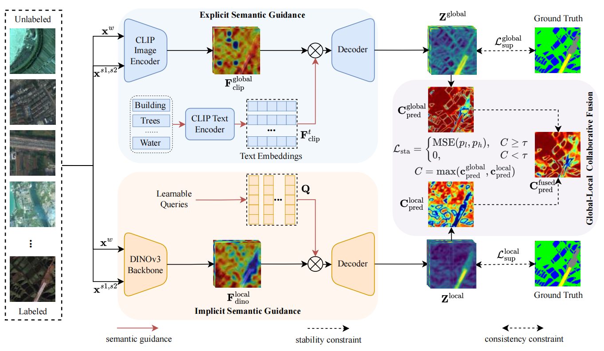
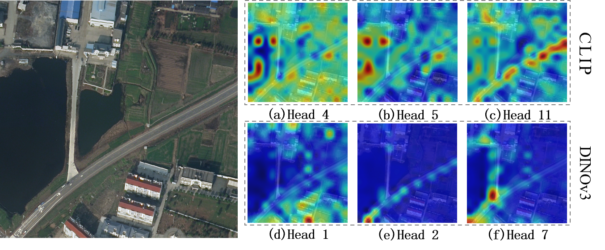

Toward Stable Semi-Supervised Remote Sensing
Segmentation via Co-Guidance and Co-Fusion
1Qinghai University
2Beijing Jiaotong University
3Tsinghua University
Overall Results Comparison
Abstract
Semi-supervised remote sensing (RS) image semantic segmentation offers a promising solution to alleviate the burden of exhaustive annotation, yet it fundamentally struggles with pseudo-label drift, a phenomenon where confirmation bias leads to the accumulation of errors during training. In this work, we propose Co2S, a stable semi-supervised RS segmentation framework that synergistically fuses priors from vision-language models and self-supervised models. Specifically, we construct a heterogeneous dual-student architecture comprising two distinct ViT-based vision foundation models initialized with pretrained CLIP and DINOv3 to mitigate error accumulation and pseudo-label drift. To effectively incorporate these distinct priors, an explicit-implicit semantic co-guidance mechanism is introduced that utilizes text embeddings and learnable queries to provide explicit and implicit class-level guidance, respectively, thereby jointly enhancing semantic consistency. Furthermore, a global-local feature collaborative fusion strategy is developed to effectively fuse the global contextual information captured by CLIP with the local details produced by DINOv3, enabling the model to generate highly precise segmentation results. Extensive experiments on six popular datasets demonstrate the superiority of the proposed method, which consistently achieves leading performance across various partition protocols and diverse scenarios.
Methodology

Overview of the proposed Co2S framework. It integrates a CLIP-based student (top) using text embeddings for explicit semantic guidance and a DINOv3-based student (bottom) using learnable queries for implicit guidance. For unlabeled data, the global-local collaborative fusion strategy enforces training stability by arbitrating supervision based on pixel-wise confidence.

Visualization of attention maps from different heads of the CLIP image encoder (a-c) and DINOv3 backbone (d-f).
Experimental Results
Comparison with state-of-the-art methods across six datasets.
(Bold: Best, Underline: Second Best)
Table I: Segmentation results (mIoU %) on WHDLD dataset.
| Method | 1/24 | 1/16 | 1/8 | 1/4 |
|---|---|---|---|---|
| OnlySup | 53.6 | 55.2 | 58.0 | 60.5 |
| FixMatch | 56.0 | 57.6 | 59.8 | 60.8 |
| U2PL | 57.1 | 58.3 | 59.9 | 61.1 |
| WSCL | 56.8 | 58.6 | 59.8 | 61.1 |
| UniMatch | 57.4 | 58.8 | 60.4 | 61.5 |
| DWL | 56.5 | 57.0 | 57.1 | 58.9 |
| MUCA | 56.5 | 58.2 | 60.0 | 60.5 |
| Co2S (Ours) | 61.1 | 61.5 | 62.2 | 62.6 |
Table II: LoveDA (1/40 Labeled Images)
| Method | Backgr. | Build. | Road | Water | Barren | Forest | Agri. | mIoU |
|---|---|---|---|---|---|---|---|---|
| OnlySup | 48.0 | 37.5 | 36.1 | 55.3 | 27.3 | 53.2 | 57.1 | 45.9 |
| FixMatch | 50.3 | 52.1 | 53.3 | 69.9 | 28.7 | 56.4 | 62.3 | 53.3 |
| U2PL | 47.4 | 47.5 | 50.9 | 69.8 | 30.0 | 56.5 | 63.8 | 52.3 |
| WSCL | 52.9 | 52.1 | 62.8 | 68.1 | 31.2 | 57.7 | 63.8 | 54.1 |
| UniMatch | 52.8 | 55.9 | 54.6 | 70.1 | 30.2 | 59.3 | 65.5 | 55.5 |
| DWL | 50.4 | 57.8 | 57.7 | 75.7 | 36.4 | 58.5 | 65.1 | 57.4 |
| MUCA | 49.2 | 50.8 | 51.0 | 73.5 | 33.9 | 58.9 | 64.7 | 54.6 |
| Co2S (Ours) | 51.6 | 59.7 | 58.3 | 76.5 | 35.9 | 61.5 | 64.2 | 58.2 |
Table II: LoveDA (1/16 Labeled Images)
| Method | Backgr. | Build. | Road | Water | Barren | Forest | Agri. | mIoU |
|---|---|---|---|---|---|---|---|---|
| OnlySup | 50.8 | 51.0 | 49.5 | 65.9 | 33.5 | 57.1 | 63.6 | 53.1 |
| FixMatch | 55.5 | 58.4 | 55.4 | 72.2 | 37.4 | 59.3 | 66.9 | 57.9 |
| U2PL | 53.5 | 58.3 | 56.6 | 72.6 | 38.0 | 59.9 | 67.3 | 58.0 |
| WSCL | 53.8 | 55.8 | 55.2 | 71.6 | 37.5 | 61.3 | 66.6 | 57.4 |
| UniMatch | 55.7 | 59.2 | 57.0 | 72.4 | 37.7 | 60.9 | 67.6 | 58.6 |
| DWL | 52.7 | 60.6 | 59.1 | 73.7 | 36.0 | 62.9 | 68.2 | 59.0 |
| MUCA | 52.6 | 54.1 | 54.5 | 75.0 | 34.1 | 61.2 | 65.0 | 56.7 |
| Co2S (Ours) | 54.0 | 62.2 | 59.0 | 76.3 | 40.0 | 63.6 | 67.6 | 60.4 |
Table II: LoveDA (1/8 Labeled Images)
| Method | Backgr. | Build. | Road | Water | Barren | Forest | Agri. | mIoU |
|---|---|---|---|---|---|---|---|---|
| OnlySup | 52.8 | 56.4 | 53.4 | 69.8 | 38.0 | 59.7 | 66.2 | 56.6 |
| FixMatch | 55.9 | 60.9 | 58.8 | 73.1 | 40.6 | 62.3 | 69.2 | 60.1 |
| U2PL | 54.8 | 60.9 | 59.4 | 72.0 | 40.3 | 61.6 | 68.4 | 59.6 |
| WSCL | 56.6 | 60.0 | 58.5 | 72.9 | 38.6 | 61.1 | 68.0 | 59.4 |
| UniMatch | 56.8 | 61.1 | 59.6 | 73.3 | 39.4 | 61.7 | 68.3 | 60.0 |
| DWL | 56.2 | 61.5 | 60.0 | 78.9 | 47.1 | 66.6 | 69.4 | 62.8 |
| MUCA | 55.5 | 57.4 | 58.2 | 77.3 | 38.3 | 65.4 | 69.2 | 60.2 |
| Co2S (Ours) | 57.2 | 63.8 | 60.4 | 79.3 | 42.3 | 66.7 | 69.2 | 62.7 |
Table II: LoveDA (1/4 Labeled Images)
| Method | Backgr. | Build. | Road | Water | Barren | Forest | Agri. | mIoU |
|---|---|---|---|---|---|---|---|---|
| OnlySup | 55.7 | 58.8 | 57.9 | 72.8 | 42.3 | 53.2 | 68.5 | 58.9 |
| FixMatch | 56.9 | 61.9 | 60.6 | 73.8 | 43.3 | 64.2 | 69.8 | 61.5 |
| U2PL | 57.4 | 61.5 | 60.6 | 74.6 | 42.9 | 64.3 | 69.2 | 61.5 |
| WSCL | 57.6 | 61.3 | 59.3 | 74.3 | 43.4 | 63.2 | 68.6 | 61.1 |
| UniMatch | 58.0 | 61.1 | 60.8 | 74.2 | 44.6 | 63.5 | 69.8 | 61.7 |
| DWL | 56.5 | 61.8 | 60.6 | 79.3 | 44.5 | 68.8 | 72.4 | 63.4 |
| MUCA | 55.9 | 61.8 | 61.1 | 78.0 | 44.8 | 68.3 | 71.6 | 63.1 |
| Co2S (Ours) | 57.0 | 63.4 | 61.0 | 79.1 | 48.3 | 67.8 | 71.2 | 64.0 |
Table III: Segmentation results (mIoU %) on Potsdam dataset.
| Method | 1/32 | 1/16 | 1/8 | 1/4 |
|---|---|---|---|---|
| OnlySup | 61.5 | 64.9 | 70.2 | 73.8 |
| FixMatch | 69.4 | 71.5 | 73.5 | 75.7 |
| U2PL | 67.2 | 71.3 | 73.3 | 75.9 |
| WSCL | 69.9 | 72.3 | 73.9 | 75.4 |
| UniMatch | 70.7 | 72.6 | 74.8 | 76.4 |
| DWL | 74.2 | 78.3 | 79.8 | 80.3 |
| MUCA | 66.9 | 71.5 | 76.0 | 79.2 |
| Co2S (Ours) | 74.3 | 76.6 | 79.8 | 80.2 |
Table IV: MER (1/8 Labeled Images)
| Method | Soil | Sands | Gravel | Bedrock | Rocks | Tracks | Shadows | Unk. | Bg. | mIoU |
|---|---|---|---|---|---|---|---|---|---|---|
| OnlySup | 4.7 | 55.1 | 71.4 | 61.7 | 38.0 | 49.5 | 34.2 | 73.0 | 87.0 | 52.8 |
| FixMatch | 2.0 | 53.6 | 73.5 | 65.8 | 40.0 | 54.8 | 31.5 | 72.4 | 90.4 | 53.8 |
| U2PL | 5.2 | 51.8 | 73.2 | 70.5 | 45.7 | 54.6 | 26.2 | 73.8 | 93.2 | 54.9 |
| WSCL | 3.5 | 54.8 | 69.9 | 62.8 | 36.0 | 56.9 | 26.1 | 76.0 | 80.9 | 51.9 |
| UniMatch | 5.5 | 54.4 | 72.7 | 68.5 | 44.7 | 55.2 | 38.0 | 73.8 | 91.1 | 56.0 |
| DWL | 5.9 | 51.0 | 74.9 | 67.2 | 41.4 | 61.9 | 28.3 | 69.7 | 90.4 | 54.5 |
| MUCA | 5.3 | 56.0 | 72.6 | 60.5 | 36.1 | 52.9 | 34.5 | 67.7 | 87.8 | 52.6 |
| Co2S (Ours) | 3.0 | 56.3 | 73.1 | 67.9 | 37.0 | 66.3 | 36.5 | 79.7 | 91.3 | 56.8 |
Table IV: MER (1/4 Labeled Images)
| Method | Soil | Sands | Gravel | Bedrock | Rocks | Tracks | Shadows | Unk. | Bg. | mIoU |
|---|---|---|---|---|---|---|---|---|---|---|
| OnlySup | 21.6 | 56.3 | 74.4 | 66.3 | 38.0 | 52.3 | 22.1 | 74.5 | 92.2 | 55.3 |
| FixMatch | 19.4 | 55.4 | 74.0 | 57.1 | 43.6 | 57.3 | 39.8 | 75.7 | 90.9 | 58.1 |
| U2PL | 7.1 | 56.4 | 73.7 | 69.7 | 41.9 | 60.8 | 23.3 | 81.4 | 90.3 | 56.1 |
| WSCL | 8.2 | 52.8 | 71.1 | 65.5 | 35.7 | 61.0 | 31.4 | 79.0 | 89.0 | 54.9 |
| UniMatch | 19.7 | 54.6 | 74.3 | 69.3 | 44.5 | 54.9 | 37.4 | 77.4 | 90.5 | 58.1 |
| DWL | 13.8 | 55.9 | 74.8 | 70.3 | 36.2 | 57.9 | 28.8 | 66.0 | 89.7 | 54.7 |
| MUCA | 1.0 | 55.1 | 73.8 | 65.6 | 38.4 | 56.3 | 28.6 | 73.7 | 84.9 | 53.0 |
| Co2S (Ours) | 13.1 | 63.3 | 76.1 | 69.4 | 37.1 | 63.1 | 41.1 | 77.1 | 91.4 | 59.1 |
Table V: MSL (1/8 Labeled Images)
| Method | Soil | Sands | Gravel | Bedrock | Rocks | Tracks | Shadows | Unk. | Bg. | mIoU |
|---|---|---|---|---|---|---|---|---|---|---|
| OnlySup | 26.8 | 61.6 | 66.8 | 72.2 | 37.9 | 45.5 | 37.0 | 49.1 | 85.1 | 53.6 |
| FixMatch | 31.0 | 65.4 | 69.6 | 75.0 | 40.4 | 49.6 | 39.8 | 54.2 | 86.5 | 56.8 |
| U2PL | 26.7 | 64.7 | 70.3 | 73.3 | 39.8 | 43.1 | 40.3 | 53.1 | 87.7 | 55.5 |
| WSCL | 25.8 | 65.0 | 68.3 | 73.9 | 38.8 | 69.6 | 39.6 | 57.0 | 86.0 | 58.2 |
| UniMatch | 29.3 | 66.7 | 69.8 | 75.4 | 39.2 | 50.8 | 43.0 | 57.9 | 89.2 | 57.9 |
| DWL | 33.5 | 65.9 | 71.2 | 74.7 | 44.7 | 48.8 | 44.8 | 56.3 | 90.9 | 59.0 |
| MUCA | 15.4 | 63.9 | 67.0 | 71.5 | 43.1 | 41.0 | 41.0 | 55.9 | 82.9 | 52.4 |
| Co2S (Ours) | 36.7 | 68.4 | 71.7 | 76.0 | 42.6 | 58.9 | 44.1 | 60.9 | 89.3 | 60.9 |
Table V: MSL (1/4 Labeled Images)
| Method | Soil | Sands | Gravel | Bedrock | Rocks | Tracks | Shadows | Unk. | Bg. | mIoU |
|---|---|---|---|---|---|---|---|---|---|---|
| OnlySup | 32.2 | 65.0 | 69.0 | 75.1 | 43.6 | 57.6 | 44.0 | 57.9 | 86.6 | 59.0 |
| FixMatch | 29.7 | 65.5 | 69.9 | 77.1 | 42.5 | 63.8 | 48.1 | 60.7 | 87.5 | 60.5 |
| U2PL | 36.1 | 62.7 | 72.7 | 76.3 | 43.3 | 63.7 | 44.2 | 65.6 | 90.1 | 61.6 |
| WSCL | 30.9 | 64.7 | 70.4 | 75.5 | 42.0 | 58.3 | 42.8 | 65.0 | 89.7 | 59.9 |
| UniMatch | 32.2 | 67.7 | 72.6 | 77.0 | 42.5 | 71.8 | 49.1 | 61.9 | 90.8 | 62.8 |
| DWL | 33.8 | 68.2 | 72.3 | 76.1 | 43.2 | 57.9 | 48.2 | 70.7 | 91.9 | 63.6 |
| MUCA | 33.7 | 69.3 | 72.9 | 76.9 | 46.2 | 40.4 | 49.9 | 55.6 | 89.2 | 59.3 |
| Co2S (Ours) | 36.0 | 67.7 | 71.8 | 77.8 | 45.5 | 77.0 | 49.2 | 76.7 | 91.7 | 65.9 |
Table VI: Segmentation results (mIoU %) on GID-15 dataset.
| Method | 1/8 | 1/4 |
|---|---|---|
| OnlySup | 67.5 | 74.1 |
| FixMatch | 70.0 | 74.8 |
| U2PL | 67.2 | 75.3 |
| WSCL | 72.8 | 75.4 |
| UniMatch | 73.9 | 75.9 |
| DWL | 72.6 | 76.9 |
| MUCA | 67.4 | 72.6 |
| Co2S (Ours) | 75.4 | 77.7 |
Visual Comparisons & Qualitative Results
Swipe to view results across different datasets

Visual Comparison MER Dataset

Visual Comparison MSL Dataset